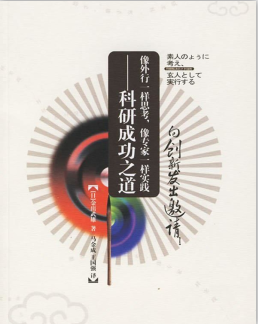

你需要多久才能变成一个"傻瓜"
金出武雄（Kanade Takeo）是美国卡内基·梅隆大学（CMU）的机器人视觉研究所所长，也是世界上最重要的计算机是视觉研究人员之一。
微信之父张小龙在《微信背后的产品观》一文中讲到：“产品经理要有傻瓜心态。”这里的傻瓜并不是真正的傻掉，而是需要有一种外行的心态，保持“stay foolish”。张小龙说，自己需要经过5~10分钟的酝酿才能达到傻瓜状态，马化腾需要1分钟，功力最深的乔布斯可以在专家和傻瓜之间随意切换，来去自如。
最早听到类似的说法是通过池老师在博客中介绍的金出武雄教授。他出版了一本书，名字叫做《像外行一样思考，像专家一样实践》，关于这本书的创作，金教授如是说：
听过我的演讲或言论之后，有很多人表示：“你的话，简直就是谎话，几乎都是谎话、是玩笑、像是真话，是真话，是自吹自擂、虽然很有建设性但……杂七杂八还有点意思。”于是我想，要不要把这些收集起来，写一本书呢？
于是这本书就诞生了，这是一个小插曲。这本书是金教授对其日常研究、生活和学习的经验进行收集整理而成的一本小册子。但其中的内容远不止这些，无论是学术、技术、产品、演讲、写作、互联网、教育、思考的本质等，书中都有所涉猎，并且观点奇特，思路新颖，适合各个创造性领域的人群阅读。

虽然今天主题是这本书，我还没有看完这本书，但是池老师读了一遍并在mactalk·跨越边界上总结了，我就站在巨人的肩膀上，挑几个思考性的观点，做一下学习思考的笔记。
Best First
金教授有个观点叫做”Best First“，意为最好东西一定要放在最前面。无论是演讲还是写书，金教授都遵循这个规则。观众或读者都希望开始的时候就看到最好的东西，很多演讲或图书都喜欢做一些冗长的铺垫才进入主题，岂不知那些铺垫已经耗尽了我们观众的耐心。
这个观点非常的有趣，基于此，我们就知道，书中的核心内容毫无疑问就是第一章：像外行一样思考，像专家一样实践。
关于反对
明斯基教授，您总是能在各种领域中想出很多创造性的，引人入胜且能够引导新方向的构思。请问您的诀窍是什么呢？
他回答说：这个很简单，只要反对大家的所说的就可以了。大家都认同的好想法基本上都不太令人满意。
关于迷茫
金教授说：越能干的人越迷茫。
就算是卡内基·梅隆大学的计算机科学系和机器人研究所的博士研究生，他们出类拔萃无所不能，也避免不了这种感觉。不，应该说，正是这种人，才更容易陷入不安和迷茫。
如果你工作时，经常在”能不能行呢？“的不安感和“啊，成功了！”的成就感之间往复行走，那么恭喜你，离成功已经没有几公里了。交织着这两种感觉的体验将成为你智慧和体力的强有力基石。这也从某种程度上解释了我为什么会经常处于一种迷茫的状态么？
关于记忆力
日常生活中，对于人的知觉、思考、行动等，追本溯源，最终都会落在记忆上，如果头脑中没有知识和信息作为工具、材料，是不可能发挥规划能力和创造能力的。构思就是通过重组脑海中的记忆而产生的。如果没有良好而广博的记忆内容做基础，根本产生不了什么好的构思。因此，最有效的学习方法就是记忆。把他人长时间思考总结出来的成果记忆下来，不仅高效快捷，也能为自身的思考扩展基础。当然，这里所谓的记忆，是指”经过理解的记忆”，这一点无需多言。
关于颠覆
计算机的发展日新月异。20世纪60年代，计算机像竞赛一样指数发展，但到了20世纪80年代，发展速度减缓，甚至有人说计算机不会再进步了，还举了很多例子：硅晶体上不能画再细的线了，不能制造出更小的晶体管了，硬盘的存储密度不能再增大了，等等。根据这些说法他们得出的结论是：发展瓶颈终将到来。
科学的进步就是不断突破极限和开辟新的领域，每个人的奋斗就是突破自己。
关于不可能原则
第一条：科学工作者声明某件事情是可行的时候，基本上他不会错。但当他说不可能的时候，他很可能错了。第二条：发现极限在哪里的唯一方法就是超越极限，尝试向稍微超越这个极限的领域迈进、冒险。第三条：无论是哪种技术，只要它是非常先进的，那看起来都跟魔术没什么区别。
如果出现一个想法和创意，看起来不可能实现，实际上你可能错了。如果发现自己的所做的事情已经做到了极限，可以试试超越极限迈进一步。
关于演讲和交流
在与他人交流的过程中完善自己的想法。无论什么样的构想，最初大都只是个偶然的想法。锤炼构想的方法就是跟他人交流，在交谈中验证是不是一个有价值的想法，并且获取相关知识，修正不完备的地方。升华构想的关键是“交流”，因为他人有很多自己角度的认识和想法，借鉴过来才能完善自己的构想。
创造的基础是模仿
模仿、相似，这样不是很好吗？最初的想法的确是相同的，但在此基础之上添加东西、使之升华的水平高低才是决定胜负的关键。因此，大部分的创造都是在模仿的基础之上增加其附加价值的东西。独创、创造，不是无中生有的魔术。
有一段时间自己非常厌恶CV战士式的工作，总想造点新的轮子或工具。想要创造出的新的东西，那一定是在原有的基础上或思维格局上进行新的改造和发现。
最后结尾引用池老师的总结。回到最初的问题，如何在专家和傻瓜之间进行自由的切换呢？其实金教授已经写在书里了：
思考的时候，要像外行一样单纯直接，实践的时候则要像专家一样严密细致，并且要有以专业知识和方法武装起来的“我做得到”的乐观主义精神。要记住，独特的、好的创意和好的结尾，不管是对研究而言，还是对商业运营而言，都不是自己突然冒出来的东西，那一定是刻苦的努力和长期的思考带来的。